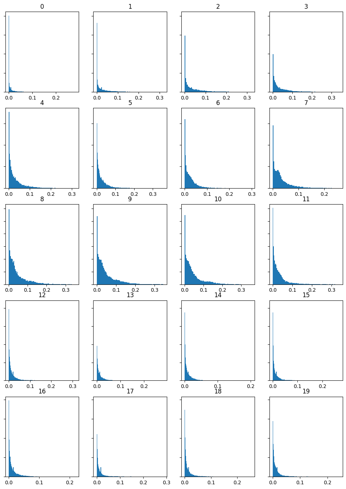
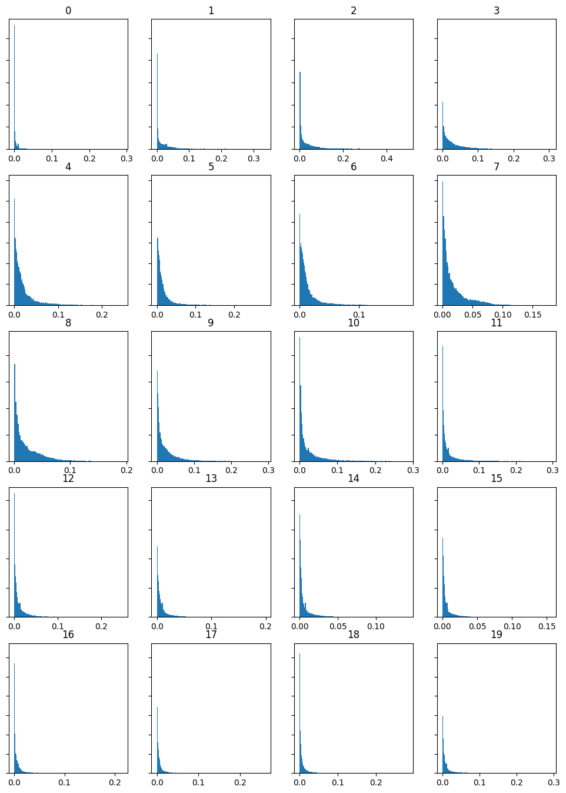
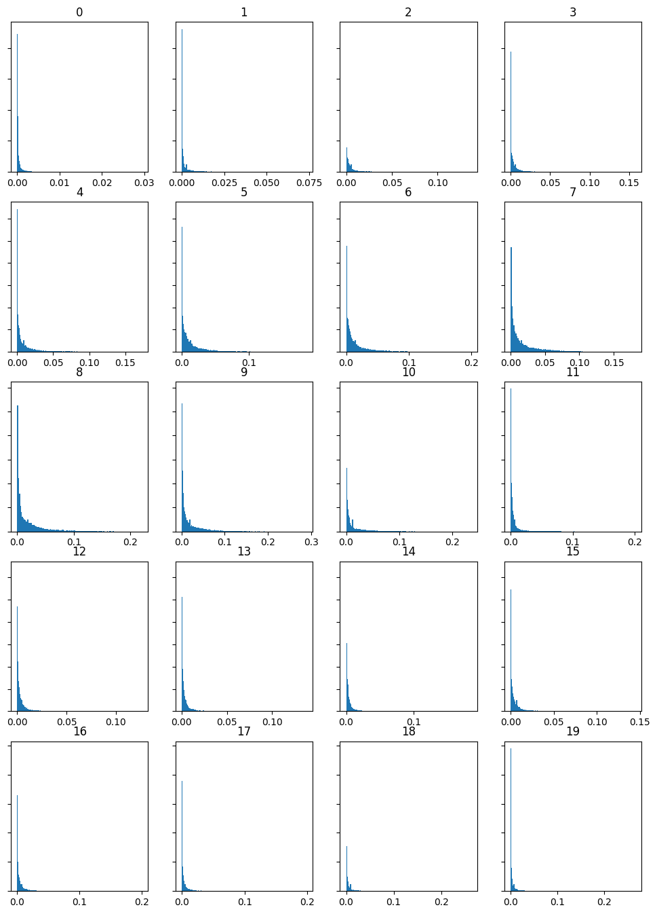
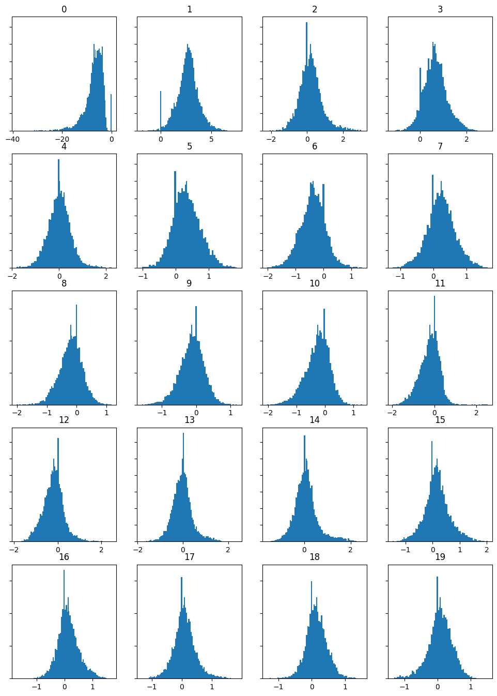
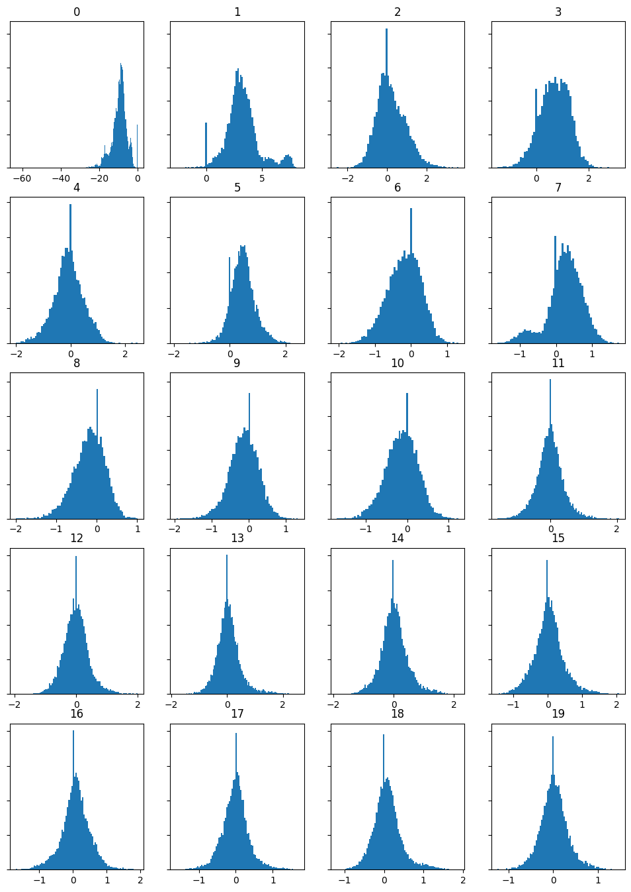
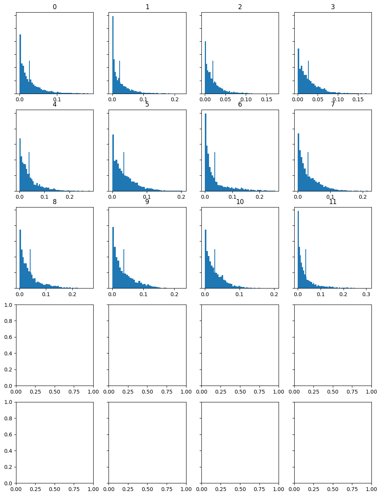
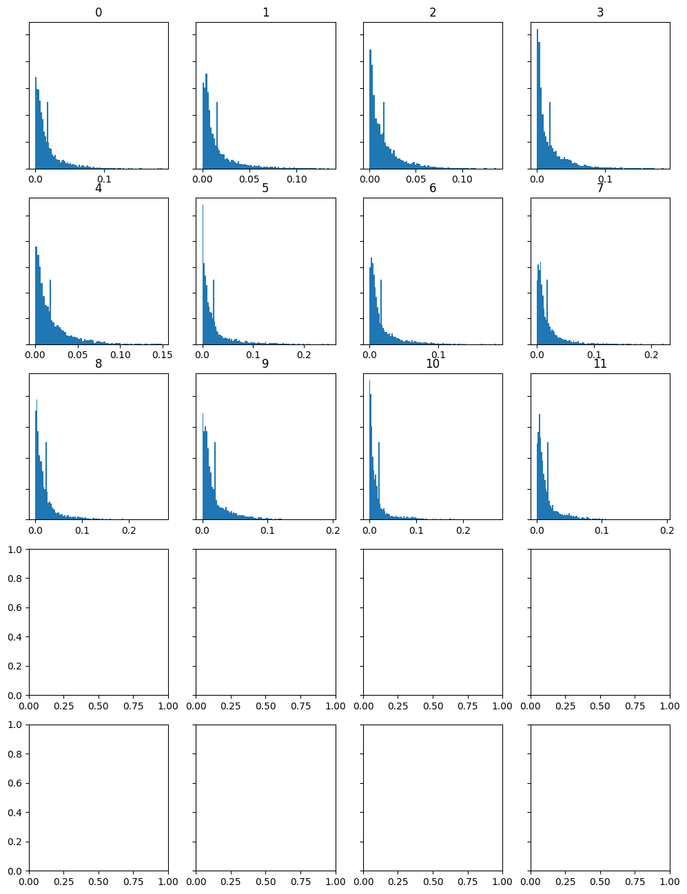

For the Week 9 task below, I have used the same tracks which I used for Week 8. These are my screenshots for the different features: Spectrograms, Mel Frequency Cepstral Coefficient (Mfcc's) and Chromagrams.









For each of the histograms generated by chromagraphs, I received an error message (shown below), this is why the histograms created using the chromagraphs are incomplete.